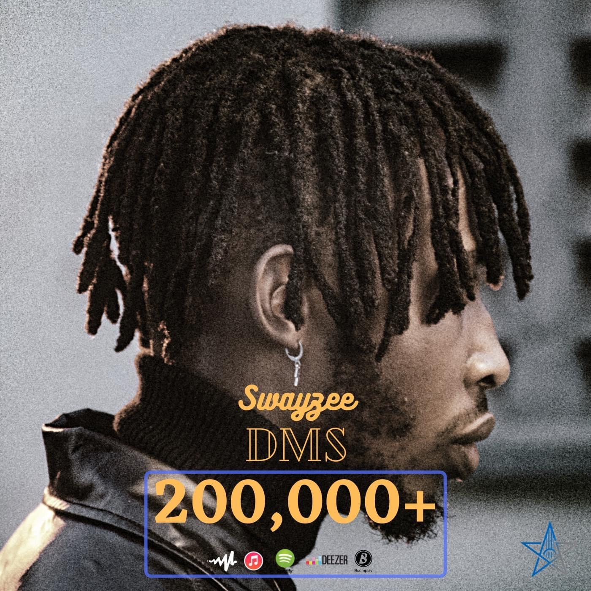

SOUND INSIGHTS & STREAMS


Ezekiel Georgewill Swayzee professionally known as “SWAYZEE” is a musician from Rivers State, Nigeria, born in Lagos on the 17th of March, 1998. He was raised in Portharcourt into a family that was not musically inclined.
Swayzee started music professionally in 2018, he claims that he got the motivation from a woman whom he was in love with and in no time he was signed into Etins record on the same year.
He had no major interests in taking music professionally, it was just street rap battles, vibes and cyphers. His rap battle alias was “FATAL EMCEE”.